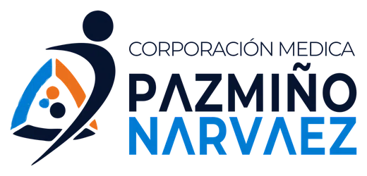
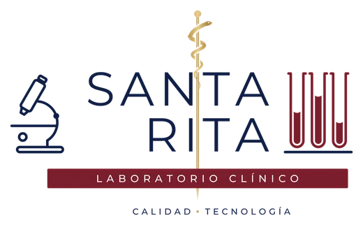
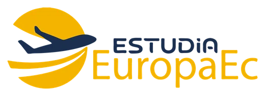
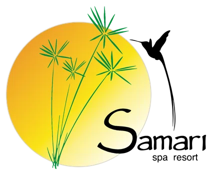
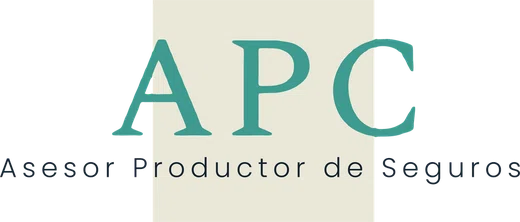
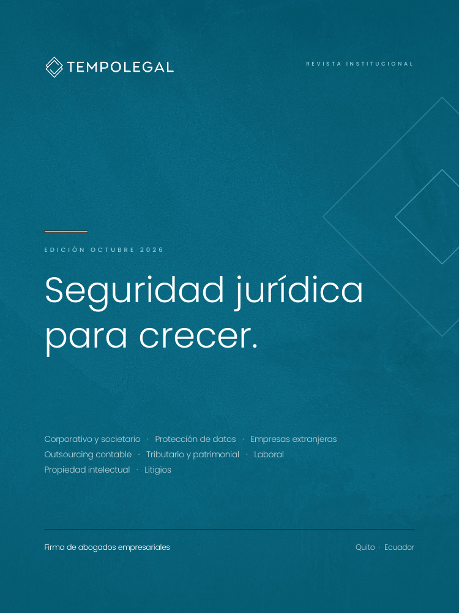

ATENCIÓN ONCOLÓGICA
SOLCA Zamora Chinchipe
Trabajo sobre documentación, fundamentos del tratamiento y confidencialidad de información clínica, con atención a muestras y jornadas médicas externas.
Conocer la experiencia publicada ↗IMPLEMENTACIÓN DE LA LOPDP · ECUADOR
Organice el manejo de historias clínicas, resultados y datos de pacientes con documentos, procedimientos y capacitación adaptados a su operación.
Respuesta el mismo día hábil.
Un primer paso sencillo. Cuestionario o llamada de 20 minutos para conocer su necesidad y preparar una propuesta con alcance, plazo y honorarios.
Aplicación jurídica y operativaCoordinación con sus áreas y proveedores.
Documentos de su propiedadEntregables editables en Word y Excel.
30 días de acompañamientoSin costo adicional desde la entrega documental, dentro del alcance contratado.
Dos casos comunicados por la SPDP en diciembre de 2025:
LigaPro · USD 259.644,01
Aplicación Fan ID.
FEF · USD 194.856,16
Aplicación Fan FEF.
La autoridad informó infracciones graves por medidas insuficientes para el tratamiento de datos. Son casos concretos, no una estimación de multa para su organización. Fuente oficial SPDP · 1 de diciembre de 2025 ↗
LA EXPERIENCIA DE UNA MISMA FIRMA
Clientes de la firma en distintos servicios jurídicos. Más abajo encontrará el trabajo descrito para SOLCA Zamora Chinchipe y Corporación Médica Pazmiño Narváez.





EN LA ATENCIÓN DIARIA
Clínicas, consultorios, laboratorios y redes médicas tienen procesos distintos. Explore algunos puntos que podemos revisar con su equipo.
01 · Cita y admisión
La agenda, la recepción y los formularios ya utilizan información personal.
Qué información se solicita y para qué; avisos de privacidad; comunicaciones de citas; relación con familiares y representantes.
Avisos, formularios y pautas de recepción ajustados al alcance.
02 · Atención clínica
Una misma historia puede ser utilizada por distintos profesionales y áreas.
Perfiles de acceso por función; deber de confidencialidad; fundamento del uso de datos de salud; solicitudes de pacientes.
Reglas de acceso, compromisos de confidencialidad y procedimiento de atención de derechos.
03 · Resultados y terceros
Laboratorios, aseguradoras, médicos y software pueden intervenir en el recorrido.
Identidad del destinatario; canales de entrega; roles de cada tercero; contratos y circulación de información.
Pautas de entrega, revisión de contratos y mapa de comunicaciones según el proyecto.
04 · Archivo y seguimiento
Los documentos impresos, respaldos y sistemas necesitan reglas durante todo su uso.
Plazos según obligaciones aplicables; custodia; accesos; respaldos; incidentes y evidencias.
Procedimientos de conservación y respuesta, con recomendaciones técnicas según el alcance.
Ejemplos orientativos; la propuesta concreta los procesos, instrumentos y actividades incluidos.
QUÉ CONTRATA
Conectamos el trabajo jurídico con la forma en que su personal y sus proveedores utilizan la información.
La propuesta define los documentos y actividades necesarios. El alcance general de 20 a 35 instrumentos es referencial: se adapta a los tratamientos y puede integrar documentos.
Documentos editables · Índice de entregables · Responsabilidades por área
Identificamos entidades, servicios, tratamientos, sistemas y terceros. El análisis determina prioridades y un plan con entregables, responsables y cronograma.
Avisos de privacidad, bases de legitimación y consentimientos cuando correspondan; confidencialidad y contratos con quienes manejan información por cuenta de la organización.
Pautas para atención de derechos, acceso y entrega de información, conservación y gestión de incidentes. Riesgos y evaluaciones de impacto según los tratamientos y el alcance acordado.
Accesos, cuentas, equipos y respaldos mediante revisión no intrusiva cuando se contrata. La propuesta delimita controles, evidencias y responsabilidades; no incluye automáticamente configuración de sistemas, pruebas de penetración ni informática forense.
Explicamos a las áreas cómo aplicar los instrumentos. Entregamos los archivos editables, carpeta maestra e índice; capacitación grabada y constancias. El calendario orienta revisiones posteriores, que se contratan por separado.
Conocer la metodología general de implementación de la LOPDP ↗
TRABAJO EN SALUD
Dos experiencias publicadas por TempoLegal. Cada organización necesita un alcance propio; estos ejemplos no prometen el mismo resultado en todos los casos.
ATENCIÓN ONCOLÓGICA
Trabajo sobre documentación, fundamentos del tratamiento y confidencialidad de información clínica, con atención a muestras y jornadas médicas externas.
Conocer la experiencia publicada ↗GRUPO MÉDICO
Acompañamiento en implementación y seguimiento, con revisión de historias clínicas, entrega de resultados, acceso a información y gestión de incidentes.
Conocer la experiencia publicada ↗Nuestros clientes, en sus palabras
Testimonios sobre distintos servicios de TempoLegal; no corresponden necesariamente al sector salud.
Confianza en la firma
He recibido una asesoría clara y cercana, el equipo entendió mis necesidades, me explicó los pasos del proceso y estuvo disponible para resolver mis inquietudes. Más allá del conocimiento jurídico, valoré especialmente su compromiso y la atención personalizada durante todo el proceso.
Experiencia empresarial
TempoLegal nos acompaña desde hace años en asuntos laborales, societarios, contractuales y de protección de datos personales. Conocen cómo funciona el grupo, así que cuando surge un problema podemos ir directamente a lo importante.
Con Juan Alberto Gómez y el equipo de TempoLegal hemos trabajado en contratos y asuntos societarios. Lo que aprecio es poder plantear un problema con confianza y recibir una opinión clara, pensada para lo que realmente necesita la empresa.

Conozca la firma
Conozca nuestro equipo, trayectoria y servicios para organizaciones en Ecuador.
Ver revista institucional · PDF ↗Edición del 15 de octubre de 2026. Las cifras y condiciones corresponden a esa edición.
CÓMO AVANZAMOS
Gerencia necesita claridad de alcance; las áreas, saber qué aportar. Organizamos ambas cosas antes de comenzar.
Diagnóstico preliminar sin costo. Revisamos su necesidad y el trabajo existente para preparar la propuesta.
Definimos entregables, honorarios, cronograma y colaboración de las áreas. Elaboramos y revisamos los instrumentos contratados.
Revisión conjunta y capacitación. Desde la entrega documental, 30 días sin costo adicional para dudas y ajustes del alcance contratado.
La implementación general tiene un plazo referencial de 8 a 12 días hábiles desde la reunión de inicio, sujeto al alcance y a la información oportuna. Redes médicas, auditorías, regularización extensa o evaluaciones de impacto pueden requerir un cronograma propio, confirmado en la propuesta. No es una promesa universal para el sector salud.
Su organización designa una persona de contacto y reúne la información y a las áreas que deben revisar y validar.
Personas detrás del trabajo
El equipo jurídico coordina el proyecto y explica a cada área qué debe aportar. Los especialistas en informática intervienen según el alcance técnico contratado. Si contrata DPD, sus funciones de asesoría y supervisión se mantienen separadas de la ejecución.
Conocer a todo el equipoSocio fundador
Derecho corporativo · Protección de datosAbogada senior
Protección de datos · Cumplimiento normativoTrabajo jurídico y técnico coordinado
Revisión de accesos, equipos, cuentas y respaldos, en coordinación con las áreas de su organización.
SUPERVISIÓN Y CONTINUIDAD
Un delegado externo —DPD o DPO— para asesorar y supervisar el tratamiento de datos de su organización de salud, en coordinación con gerencia y sus responsables clínicos y tecnológicos.
DPD significa Delegado de Protección de Datos. DPO corresponde a Data Protection Officer, su denominación en inglés.
Revisamos la obligación de designar un Delegado de Protección de Datos según su actividad y las normas aplicables. El DPD asesora y supervisa con independencia; la organización conserva sus responsabilidades.
Conocer las ventajas del delegado externoRIESGO ECONÓMICO
Para entidades privadas y empresas públicas, la LOPDP contempla multas sobre el volumen de negocio del ejercicio económico anterior.
Explorar el simulador de multas ↗0,1 %–0,7 %Infracciones leves
0,7 %–1 %Infracciones graves
El volumen de negocio no equivale a la utilidad. La sanción depende de los hechos y del procedimiento; no es automática. Contratar el servicio no garantiza ausencia de sanciones.
Fuente: LOPDP, arts. 71 a 73 · PDF ↗DUDAS DE SU OPERACIÓN
Protección de datos en clínicas, consultorios, laboratorios y organizaciones de salud.
Las herramientas orientan; la determinación de obligaciones requiere revisar su actividad y la normativa sectorial aplicable.
Son parte de la protección, pero también hay que organizar accesos, custodia, entrega de información y responsabilidades del personal. Revisamos cómo se manejan los datos desde la admisión hasta el archivo, incluyendo los procesos administrativos y los proveedores.
Consultar fuente oficial ↗No. El consentimiento informado para una intervención médica y la base que permite tratar datos personales cumplen funciones distintas. La LOPDP contempla supuestos asistenciales en los que no se exige consentimiento para tratar datos. Eso no autoriza automáticamente publicidad, fotografías promocionales u otros usos: cada finalidad debe evaluarse y explicarse.
Consultar fuente oficial ↗El acceso debe responder a funciones autorizadas y preservar la confidencialidad. Para entregar una copia se verifica quién la solicita, su identidad y la representación o autorización que corresponda. Ser familiar del paciente no debe tratarse como autorización automática para acceder a toda su información.
Consultar fuente oficial ↗La solicitud debe atenderse, pero la eliminación no es automática cuando existen deberes de conservación u otra razón legal aplicable. Revisamos qué información debe conservarse, durante cuánto tiempo y cómo restringir sus usos. No fijamos un plazo único para todos los expedientes sin revisar la normativa y el tipo de documento.
Consultar fuente oficial ↗LOPDP y ejercicio de derechos ↗No por sí solo. También deben revisarse las funciones del proveedor, los accesos, la seguridad, las instrucciones y las condiciones contractuales. Si trata datos por cuenta de la institución, esa relación requiere un contrato adecuado; si intervienen otros países o proveedores, hay que analizarlo expresamente.
Consultar fuente oficial ↗El canal requiere una evaluación concreta: destinatario correcto, información necesaria, accesos y medidas de confidencialidad. Antes de habilitarlo, definimos el procedimiento con su equipo. Para una consulta comercial inicial, no nos envíe historias clínicas, resultados ni documentos que identifiquen pacientes.
No se decide solo por el tamaño. La normativa contempla a los actores del sistema de salud obligados a mantener historias clínicas y establece una excepción para profesionales que ejercen de manera particular. Revisamos la forma de operación y los demás supuestos aplicables antes de determinar la obligación y la modalidad adecuada. También se revisan los supuestos de gran escala previstos en la normativa, incluidos los de calificación directa; no se resuelve solo contando pacientes. Criterio oficial sobre gran escala ↗
Consultar fuente oficial ↗Active el procedimiento de incidentes y coordine de inmediato con los responsables internos, tecnología y el DPD, si existe. Documente lo ocurrido, preserve evidencias y evalúe las medidas de contención y las notificaciones que correspondan. Una vulneración puede afectar confidencialidad, integridad o disponibilidad; no se limita a un ataque informático.
Consultar fuente oficial ↗No necesariamente. Partimos del trabajo existente y acordamos qué conservar, actualizar o completar. La implementación, la supervisión del DPD y las intervenciones técnicas tienen alcances diferenciados; la propuesta identifica responsables, entregables y trabajos adicionales antes de ejecutarlos.
Empezamos por conocer su actividad, sus procesos y el trabajo ya realizado. La propuesta define los documentos, procedimientos, capacitación y revisiones que necesita, junto con el plazo y los honorarios. El contacto preliminar no equivale a una auditoría ni requiere enviar datos de pacientes.
Conversemos sobre su organización
Cuéntenos qué tipo de establecimiento o red representa y qué necesita resolver. Si le encargaron este tema, no necesita conocer los términos jurídicos para consultar.
Empezamos con un cuestionario o una llamada de 20 minutos, sin costo ni compromiso de contratar. Con esa información, preparamos una propuesta con entregables, plazo y honorarios.
Respuesta inicial el mismo día hábil.